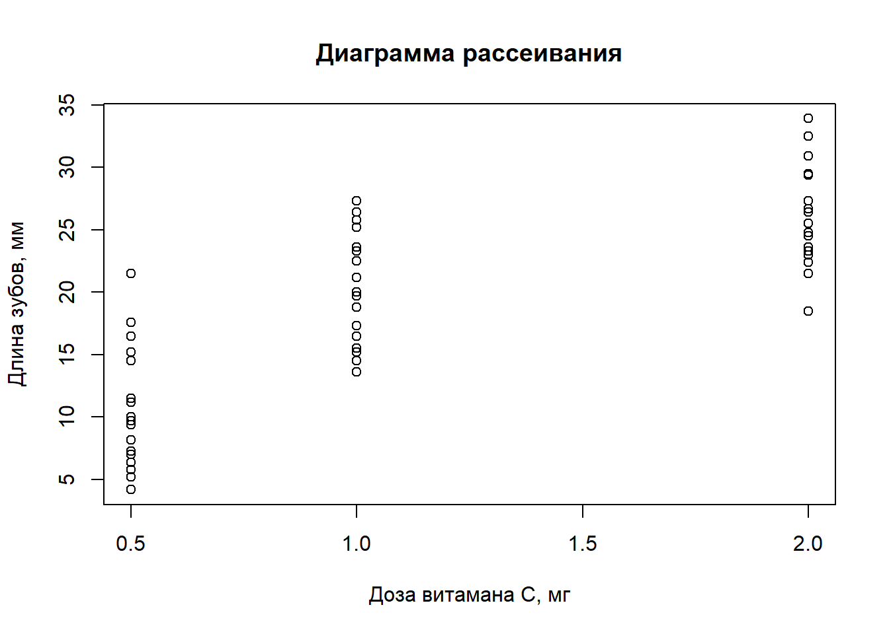
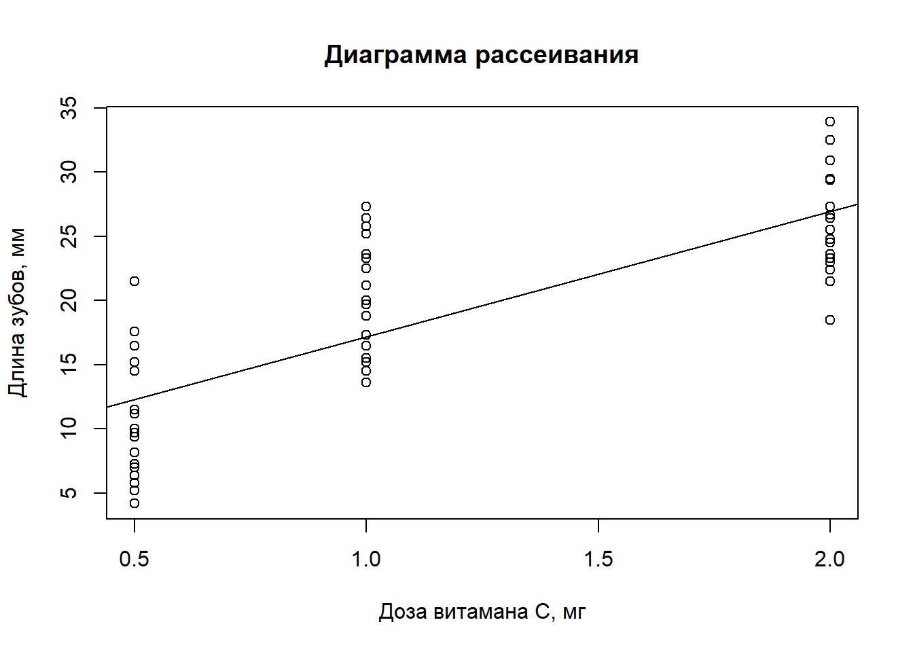

## [1] "Russian_Russia.1251"Дорогие студенты! Данный пример разработан в демонстрационных и учебных целях для знакомства с некоторыми основными этапами работы над исследованием с использованием простой модели парной линейной регрессии. Пример основан на данных из работы Crampton, E. W. (1947). The growth of the odontoblast of the incisor teeth as a criterion of vitamin C intake of the guinea pig. The Journal of Nutrition, 33(5), 491–504. 10.1093/jn/33.5.491.
Установку пакетов мы запускаем один раз или для обновления пакетов до текущей актуальной версии.
#' install.packages(c("datasets",
#' "sandwich",
#' "lmtest",
#' "stargazer"))Когда устанавливать или обновлять пакету не нужно, мы просто их подгружаем.
library(datasets) #' пакет с наборами данных
library(sandwich) #' робастные стандартные ошибки
library(lmtest) #' диагностика моделей, проверка гипотез
library(stargazer) #' вывод регрессионных таблиц Сначала мы рассмотрим прямое применение алгебры парной линейной регрессии для оценки параметров и графической иллюстрации результатов. В этой части мы намеренно игнорируем возможности применения пакетов и функций за пределами элементарных статистических. Это хорошая возможность убедиться на практике, что вы разобрались с основами алгебры парной модели.
Необходимые для построения переменные:
y <- ToothGrowth$len #' длина зубов - зависимая переменная
x <- ToothGrowth$dose #' доза витамина - объясняющая переменнаяДиаграмма рассеивания для наших данных:
plot(x = x,
y = y,
main = "Диаграмма рассеивания",
xlab = "Доза витамана C, мг",
ylab = "Длина зубов, мм")
Оценки МНК парной линейной регрессии без функции \(\texttt{lm()}\) (просто алгебра):
b1 <- cov(x,y)/var(x)
b0 <- mean(y) - b1*mean(x)Дорисовываем на график регрессионную линию:
plot(x = x,
y = y,
main = "Диаграмма рассеивания",
xlab = "Доза витамана C, мг",
ylab = "Длина зубов, мм")
abline(b0,b1)
Оценка парной регрессии МНК, функция lm()
m1 <- lm(len ~ 1 + dose, data = ToothGrowth)Оценка стандартных ошибок, робастная формула:
cf1 <- coeftest(m1, df = Inf, vcov = vcovHC, type = "HC0")Вывод результатов в таблицу:
stargazer(m1,cf1,type='text')| Dependent variable: | ||
| len | ||
| OLS | coefficient | |
| test | ||
| (1) | (2) | |
| dose | 9.764*** | 9.764*** |
| (0.953) | (0.866) | |
| Constant | 7.423*** | 7.423*** |
| (1.260) | (1.264) | |
| Observations | 60 | |
| R2 | 0.644 | |
| Adjusted R2 | 0.638 | |
| Residual Std. Error | 4.601 (df = 58) | |
| F Statistic | 105.065*** (df = 1; 58) | |
| Note: | *p<0.1; **p<0.05; ***p<0.01 | |
t1 <- cf1[2,1]/cf1[2,2]
Pv1 <- 1-pnorm(t1) #1-сторонняя!!!
print(t1)## [1] 11.27144print(Pv1)## [1] 0